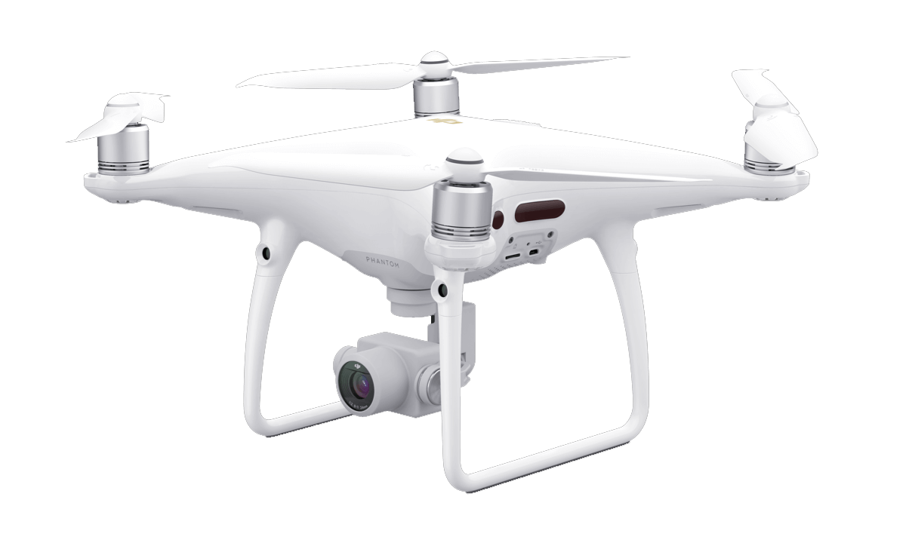

Phantom 4 PRO V2.0

Description:
The new Phantom 4 Pro V2.0 features an OcuSync HD transmission system,
which supports automatic dual-frequency band switching and connects
to DJI Goggles RE wirelessly. Like The Phantom 4 Pro and Advanced,
the Phantom 4 Pro V2.0 is equipped with a 1-inch 20-megapixel sensor
capable of shooting 4K/60fps video and Burst Mode stills at 14 fps. Plus,
its FlightAutonomy system includes dual rear vision sensors and infrared
sensing systems for a total of 5 directions of obstacle sensing and 4
directions of obstacle avoidance.
Specs:
Diagonal Size (Propellers Excluded):
350 mm
Camera:
4096×2160(4096×2160 24/25/30/48/50p)
3840×2160(3840×2160 24/25/30/48/50/60p)
2720×1530(2720×1530 24/25/30/48/50/60p)
1920×1080(1920×1080 24/25/30/48/50/60/120p)
1280×720(1280×720 24/25/30/48/50/60/120p)
Battery
5870 mAh
More:
Surface with diffuse reflection material, and reflectivity > 8% (such as wall, trees, humans, etc.)
+
GL300K: Built-in display device (5.5 inch screen, 1920×1080, 1000 cd/m2, Android system, 4 GB RAM＋16 GB ROM)
GL300L: Tablets and smart phones
Back